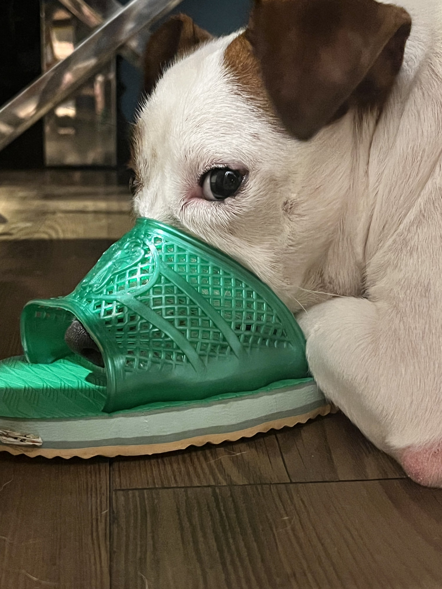
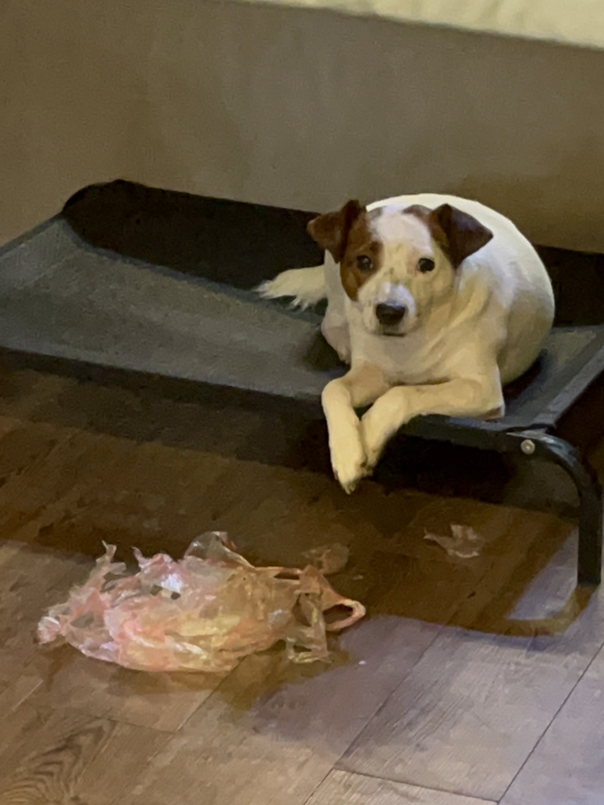
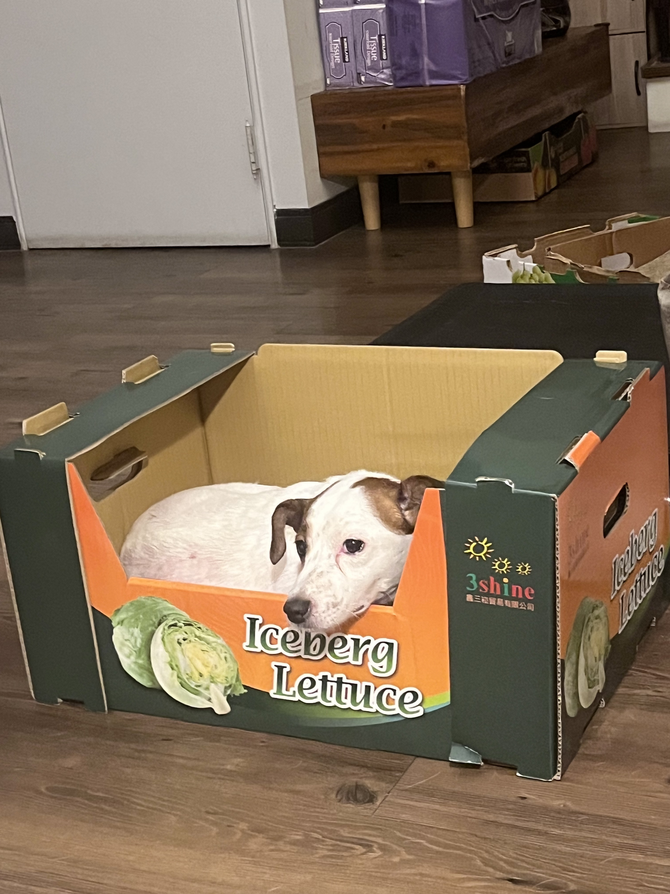
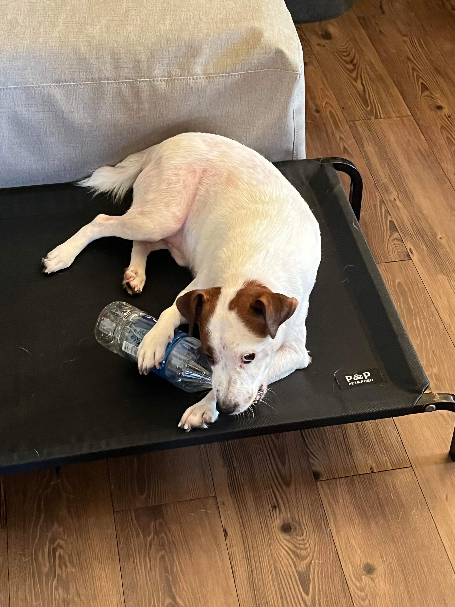

— 店長的好物心得 —

室內拖鞋
店長的最愛! 最好每天都要玩，最喜歡把鼻子塞進去，感覺很有安全感～嚼感很棒，把上面咬壞還可以拿來當枕頭睡覺，推薦NO.1

塑膠袋
如果找不到東西玩的時候也可以選擇這款，經濟又實惠的塑膠袋，咬起來很輕，聲音也很讚，沙沙沙的，但是根據不同款式材質的選擇，口感也會不一樣，可以撕碎碎的，但是建議大家不要吃下去，不然會被罵。

各式紙箱、盒子
紙箱跟盒子也是店長的心頭好，可以用又可以玩，小的可以拿來啃，大的可以先當小窩睡覺，用膩了再破壞，嘿嘿。

各式瓶罐
瓶罐的部分大家可以根據自己的嘴巴大小去選擇不同牌子的，吉娃娃建議小瓶多多罐，至於大型犬就可以自由選擇，因為你們嘴巴很大，但瓶罐就比較難破壞，主要的玩法是丟在地上聲音很大。

毛毛地墊
毛毛地墊也是一款經濟實惠的玩具選擇，踩起來軟軟的適合睡覺，想要抓的時候也可以刨上面的毛毛，會掉出很長一根，而且一塊可以從小用到大！這個吃掉會拉不出來，所以也是不建議食用。